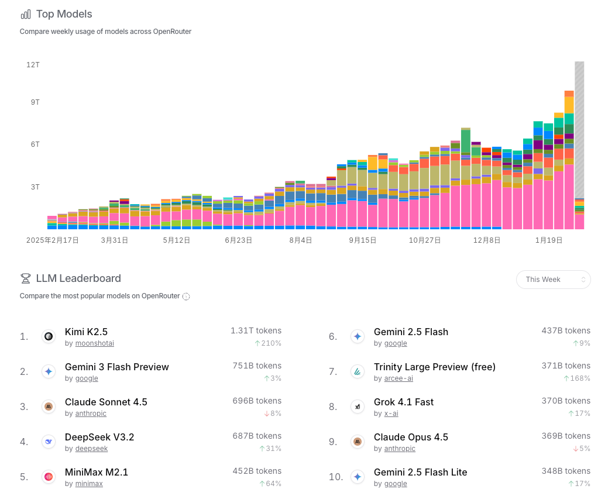
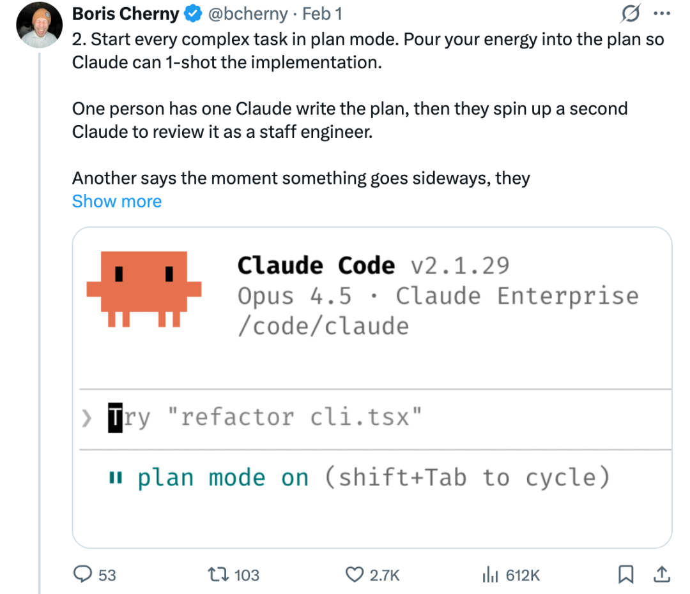
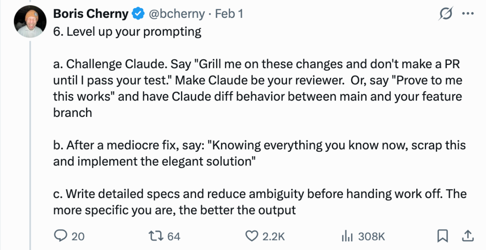
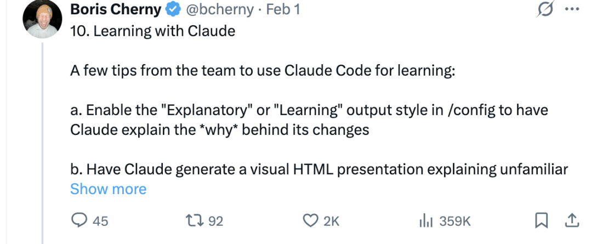

Cursor 和 Claude Code 用了也有很长的一段时间，我现在的日常大概是：Cursor 占 60%，Claude Code 占 40%。两个工具各有胜负，但如果只用 Claude 官方模型，可能这个比例会反过来。
之前给 Claude Code 配置的是 Claude Opus 4.5，但国内开发者应该都懂：账号容易被封，超时更是家常便饭。你刚花了几千 Token 把上下文喂给它，眼看就要出结果了——啪，一个 timeout，欲哭无泪。
后来我索性把 Claude Code 接上了国产大模型。特别是 Kimi K2.5 和 GLM-4.7 这俩出来后，性价比直接起飞！！！在大多数日常开发场景里，它们的效率完全不输 Claude 和 OpenAI。
OpenRouter 的周排行榜和 OpenClaw调用请求量榜单，Kimi K2.5 长期霸榜第一，大幅领先于 Gemini 3。

Claude Code 接入 Kimi 2.5 和 GLM-4.7 其实就三步：申请 API Key → 配置环境变量 → 启动。搞定！🎯
# GLM
export ANTHROPIC_BASE_URL=https://open.bigmodel.cn/api/anthropic
export ANTHROPIC_AUTH_TOKEN=你的API密钥
export ANTHROPIC_MODEL=GLM-4.7
export ANTHROPIC_DEFAULT_HAIKU_MODEL=GLM-4.7
export ANTHROPIC_DEFAULT_SONNET_MODEL=GLM-4.7
export ANTHROPIC_DEFAULT_OPUS_MODEL=GLM-4.7
# Kimi
export ANTHROPIC_BASE_URL=https://api.moonshot.cn/anthropic
export ANTHROPIC_AUTH_TOKEN=你的API密钥
export ANTHROPIC_MODEL=kimi-k2.5
export ANTHROPIC_DEFAULT_HAIKU_MODEL=kimi-k2.5
export ANTHROPIC_DEFAULT_SONNET_MODEL=kimi-k2.5
export ANTHROPIC_DEFAULT_OPUS_MODEL=kimi-k2.5
💡 小提示：建议把这些配置写进 .zshrc 或 .bashrc，不然每次重启终端都要重新 export，很烦。
如果你经常 Kimi、GLM、Claude 官方模型切来切去，手动改环境变量确实有点劝退 😅。GLM 接入 Claude Code 官方文档有提供脚本的方案，提高环境变量配置的效率。
当然也可以考虑使用 claude-code-router 这个神器。
它能让你用一条命令快速切换模型，不用改配置文件，不用重启终端。比如：
ccr use kimi # 切换到 Kimi
ccr use glm # 切换到 GLM
ccr use claude # 切回 Claude 官方
🔗 项目地址：https://github.com/musistudio/claude-code-router
更多配置细节也可以参考官方文档：
GLM：https://docs.bigmodel.cn/cn/coding-plan/tool/claude Kimi：https://platform.moonshot.cn/docs/guide/agent-support
实用技巧
分享几个我每天都用的命令，新手可能不知道，老手可能忘了用：
🔄 会话管理
/clear | 长任务必备 | |
/compact | /clear 更温和，保留关键信息同时节省 Token | |
/rewindEsc+Esc |
血泪教训：长任务做到一半记得定期 /compact，别等报错才后悔。
📁 项目与上下文
/init | |
/memory | |
/add-dir | |
/context |
💸 模型与成本
/model | |
/cost | |
/usage |
省钱小窍门：写注释、格式化这种简单活，切 Sonnet 或 Haiku 就够了，别用 Opus 烧钱 😂
Plan Mode
如果说 Claude Code 只有一个必学功能，我会选 Plan Mode。特别是在处理复杂需求时，它真的能救命。
Plan Mode 是 Claude Code 的一种只读规划模式，让 Claude 在不修改任何代码的情况下先分析问题、制定详细计划，等待你批准后再执行。这相当于"先思考，后行动"的工作流程
我用 Plan Mode 最多的三个场景：
接手新项目 —— 扔给 Claude 一堆代码，让它先出一份架构图 + 入口分析，比自己硬啃快多了 做大功能 —— 动手写代码前先让 Claude 规划模块拆分、接口设计，后期返工少一半 重构/优化 —— 先让 Claude 分析现有代码的问题，给出优化方案，确认可行再执行
怎么进入 Plan Mode：
| 快捷键 | Shift + Tab⏸ plan mode on 就对了 | |
| 命令行 | claude --permission-mode plan | |
| 单次查询 | claude --permission-mode plan -p "你的问题" |
我的 Plan Mode 工作流：
当 Claude Code 输出计划后，会让你选择：
| 1. Yes, clear context and auto-accept edits (shift+tab) | ||
| 2. Yes, auto-accept edits | ||
| 3. Yes, manually approve edits | ||
| 4. Type here to tell Claude what to change |
💡 小技巧：我一般会选 4，然后输入："先把计划保存到 plan.md，我们再继续"。这样方案留底，后面出问题了还能回溯。等保存完了再选 2 让 Claude 自动执行。
来自创始人的私藏技巧
Claude Code 创始人 Boris Cherny 在 X 上分享过团队内部的使用心得。挑几个我觉得特别实用的：
原文链接：https://x.com/bcherny/status/2017742741636321619
1️⃣ 任何复杂任务，从 Plan Mode 开始
前面已经说过 Plan Mode ，创始人也提到了说明 Plan Mode 的重要性。
把精力集中在打磨计划上，这样 Claude 在实现代码时就能一步到位（1-shot）。
团队里有个成员的做法是：先让一个 Claude 写出计划，然后启动第二个 Claude，让它代入Staff Engineer（资深工程师）的角色来对计划进行 Review。
还有成员建议：一旦发现进展跑偏（go sideways），立刻切回 Plan Mode重新规划。千万别硬推。他们甚至会明确指示 Claude 在验证步骤中也要进入 Plan Mode，而不仅仅是在构建代码的时候才用。

2️⃣ 提升你的prompt
几个我常用的"刁钻" prompt：
🧪 角色反转 —— 让 Claude 考你：
"针对这些改动向我提问，在我通过你的测试之前不要提交 PR"
让 Claude 充当面试官，帮你查漏补缺。它问的问题往往是你没想到的 edge case。
🔍 要求自证：
"证明这套方案行得通，对比 main 分支和 feature 分支的差异"
逼 Claude 写出验证逻辑，而不是盲目相信它的"我觉得没问题"。
💡 推倒重来：
"基于你现在掌握的信息，推翻刚才的方案，换一个更优雅的实现"
当 Claude 给出一般般的方案时，用这句话激发它的第二想法。往往第二个方案比第一个好得多。
📝 先写 Spec 再动手：
交付任务前，先让 Claude 写详细的规格说明。你写得越具体，它输出越靠谱。 vague 的需求 = vague 的代码，这个道理对 AI 也一样。

3️⃣ Claude 是最好的学习搭子
几个团队内部的学习小技巧：
🎓 开启解释模式：在 /config 里把输出风格设为 "Explanatory" 或 "Learning"，Claude 会在改代码的同时解释为什么这么改。适合读新项目代码时边改边学。
📊 生成可视化简报：让 Claude 把陌生代码库生成一个 HTML 演示文稿。不得不说，它做的幻灯片比很多 PM 做的都好…… 😂
🗺️ ASCII 架构图：
"给我画个 ASCII 流程图，解释这个模块的调用链"
不用开画图工具，终端里直接看清逻辑，程序员友好。
🔄 间隔重复学习：跟 Claude 玩"费曼学习法"：你先解释自己理解的逻辑，Claude 通过提问填补你的知识盲区，最后把学习记录保存下来。

Boris 还提到了 CLAUDE.md 和 Skills 的进阶玩法，特别是 Skills 系统，最近社区里讨论得很多。等我把实践总结整理好了，再专门写一篇分享 👋